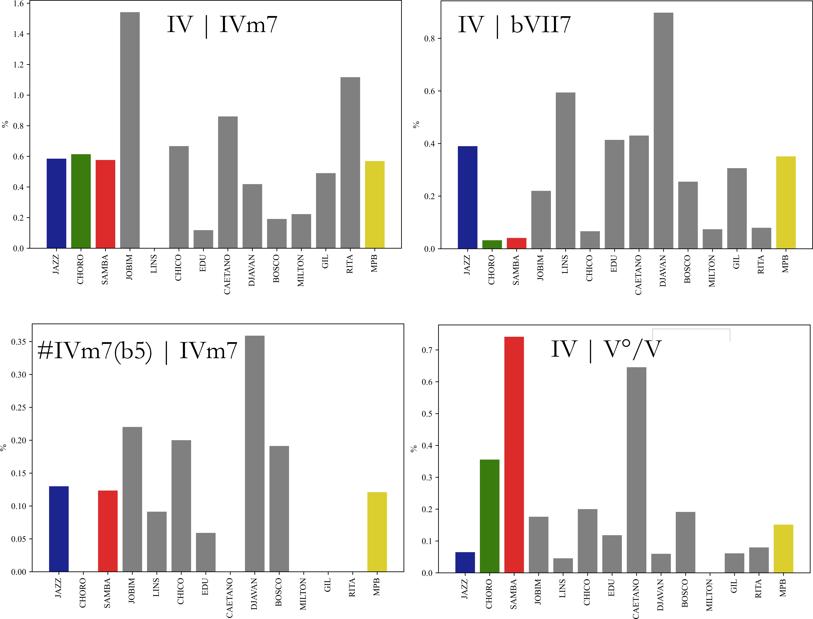
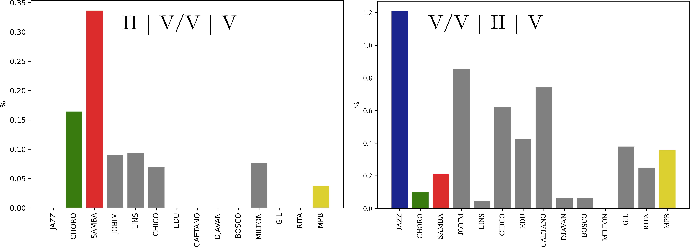
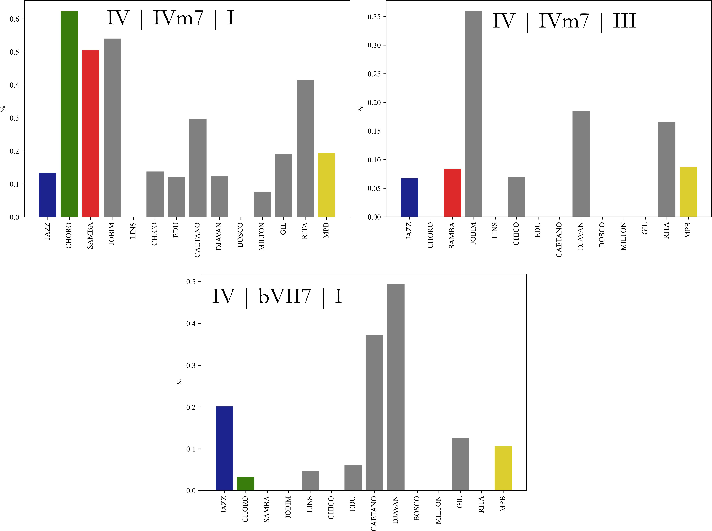

N-gramas funcionais específicos
1 Introdução
Neste capítulo, em seguimento ao capítulo sobre n-gramas, examinaremos sequências acordais específicas, de significados funcionais relevantes para o mapeamento estilístico almejado, comparando suas distribuições nos diferentes corpora, o que, por certo, nos permitirá extrair conclusões adicionais referentes aos objetivos do projeto.
Com tal propósito, os gráficos a seguir são organizados de acordo com as cardinalidades envolvidas (ou seja, 1-gramas, 2-gramas etc.) e com as classes ou situações funcionais que consideramos significativas para exame e comparações. Os percentuais dos gráficos se referem às distribuições das categorias específicas nos respectivos corpora em relação aos n-gramas correspondentes. Sendo assim, é sempre importante atentar para as diferenças de escalas envolvidas: enfatizamos, assim, que as comparações entre os desempenhos dos corpora em relação a algum aspecto devem ser consideradas apenas no âmbito do gráfico em questão.
2 Gráficos
2.1 Referentes a 1-gramas
2.1.1 Dentro da classe funcional DIA

DISCUSSÃO
O primeiro conjunto de gráficos examina o desempenho dos graus diatônicos isolados (apenas o VII não é considerado). Como seria de esperar, o I grau é o 1-grama é altamente recorrente em todos os repertórios, em níveis consideravelmente próximos, com a exceção do corpus Milton, no qual se apresenta de maneira bem mais expressiva. Isso pode ser atribuído à proeminência da lógica modal na obra do compositor (reforçando o que já foi comentado em outros resultados do projeto.
Há maior variância dentro do conjunto MPB em relação aos demais graus tonais (IV e V). Nesse sentido, chama especial atenção a maior presença do IV em Milton,1 Caetano e Rita (nestes casos, provavelmente devido a uma relativa proeminência dos gêneros rock e rhythm and blues nesses repertórios).
Quanto aos graus diatônicos menores, II é, em média, o mais comum, provavelmente, devido ao fato de ser um acorde preferencialmente aplicado como preparação cadencial, dentro da organização funcional tonal.2 O acorde tem em Jobim uma distribuição levemente maior do que a média, enquanto que em Milton apresenta-se em percentuais bem menores (novamente, devido à expressiva presença de peças modais nesse corpus).
O 1-grama VI ocupa uma posição hierárquica mais baixa do que o II, na média, no conjunto MPB. Contudo, ainda assim, tem uma presença consideravelmente maior do que se observa nos gêneros de controle, especialmente o Samba. Isso sugere que a categoria funcional talvez possa estar associada a uma sutil preferência estilística da Prática Comum da MPB.3 Internamente ao conjunto, VI destaca-se no corpus Lins (seguido por Milton), tendo a menor distribuição em Jobim.
Comparado aos demais diatônicos, o III é bem menos comum (o que é consistente, aliás, com o que se observa em geral na funcionalidade tonal, independentemente de estilo), apresentando em Djavan e Milton as maiores recorrências.
2.1.2 Dentro das classe funcional PRE

DISCUSSÃO
Os gráficos examinam 1-gramas da classe PRE que, por definição, são inerentemente instáveis e trazem consigo fortes expectativas de continuação.4 Consideramos cinco subgrupos: o primeiro deles congrega a subclasse dos Dominantes Secundários. V/V, V/IV e V/II são, em média, como se esperaria, os mais proeminentes.5 Em relação a esse trio, podemos tecer as seguintes observações: (a) o V/V é bem proeminente no Choro (comparado aos demais gêneros e ao conjunto MPB), o que parece ser derivado a aspectos estruturais;6 (b) o maior percentual de V/IV no corpus Chico sugeriria, consequentemente, um destaque de seu alvo (o IV) no mesmo repertório. No entanto, a presença do subdominante estrutural nesse repertório é a mais baixa entre seus pares, o que é no mínimo enigmático, requerendo estudos futuros;7 (c) V/II é 1-grama de forte importância na organização de sambas, o que faz com que seja mais comum, evidentemente, no respectivo controle e nos corpora nos quais o gênero tem boa presença (na ordem: Bosco, Chico, Djavan e Jobim).
Os demais dominantes secundários – V/VI e V/III – são menos frequentes em todos os corpora. Isso posto, chama a atenção a relativa proeminência de V/III no corpus Chico, o que pode estar associado a uma característica de seu estilo pessoal, o que valeria uma investigação específica.8
O segundo subgrupo contém apenas uma categoria funcional, o “II relativo” (ou “II”). Tratado aqui em sua versão genérica (ou seja, sem a identificação de seu alvo), tal acorde pluga-se a um dominante secundário (o núcleo da fórmula) formando o bloco que denominamos “locução dominante secundária” (ou simplesmente locução). A expressiva presença dessa categoria nos corpora Jobim, Lins, Chico, Caetano, Djavan e Gil denotam uma nítida influência da harmonia do Jazz, na qual locuções formam um dos mais característicos construtivos.9
O 1-grama SubV (cuja alvo é I)10 é outra importante influência jazzística na MPB. Isso é marcante, em especial, no corpus Jobim e, um pouco menos em Edu Lobo. Não foram encontradas ocorrências dessa categoria funcional no repertório de Rita Lee.
O quarto subgrupo considera os principais acordes diminutos de aplicação cromática (bIII°) e bordadura (I°). A despeito de suas relativas baixas frequências nos corpora (se comparados aos demais da classe PRE), suas avaliações são aqui relevantes por integrarem fórmulas idiomáticas associadas à tradição da música brasileira (especialmente bIII°), o que pode contribuir para o rastreamento estilístico da MPB.
Por fim, o quinto subgrupo considera três dos mais significativos diminutos que substituem dominantes secundários, dado que representam também influências do grupo controle na MPB, desta vez, do Samba e do Choro. O 1-grama V°/V, que tem distribuição semelhante em ambos os gêneros apresenta-se em quase idênticos percentuais nos corpora Jobim, Chico e Bosco, seguidos de perto por Caetano (nos demais repertórios a categoria é bem mais rara). No caso de V°/II (levemente mais comum no Samba), o percentual de Jobim corresponde a quase totalidade do conjunto MPB,11 o que se mostra como uma informação interessante. Por último, V°/III, um 1-grama de forte característica estilística no Choro (e baixíssima recorrência no Samba) tem maiores presenças em Jobim e Djavan, em destaque em relação aos demais repertórios
2.1.3 Dentro das classes funcionais E1 e E2

DISCUSSÃO
O conjunto de gráficos compara cinco dos 1-gramas mais recorrentes da classe dos Empréstimos de Primeira Ordem (E1) – IVm7, bVII7, bII7M, bVI7M e Vm7 – e aquele que pode ser considerado o mais importante dos bem mais raros Empréstimos de Segunda Ordem (E2), bVIm7.
A partir da observação analítica, a maior presença relativa (isto é, entre todos os empréstimos) de IV7 pode se dever a três principais fontes: (1) como uma influência advinda do blues-jazz, devidamente assimilada à sintaxe funcional tonal (detectada nos corpora Djavan, Jobim e, um pouco menos em Bosco, Chico e Edu);12 (2) como uma influência dos gêneros (modais) blues ou do rhythm and blues (detectada especialmente no repertório de Rita Lee, mas também em Gilberto Gil); (3) fruto de construções modais-diatônicas – principalmente de natureza dórica –, o que se observa mais consistentemente no corpus Milton.
IVm7, a categoria principal representante da importante subclasse funcional Subdominante Menor, é encontrada em todos os repertórios (embora em pesos distintos). Jobim, Chico e Djavan (nessa ordem) se destacam como corpora que apresentam percentuais acima da média MPB.
As demais categorias de E1 consideradas, bVII7, bII7M e bVI7M integram a subclasse de IVm7, sendo principalmente empregados como substitutos dessa categoria (o que as tornam alternativas relativamente menos comuns, como explicia a comparação das escalas percentuais dos gráficos). Além da aplicação normativa de substituição, tais categorias são também empregadas, eventualmente, em organizações modais diversas, o que talvez explique as relativas altas frequências em Caetano (bVI7M) e, especialmente, em Milton (bII7M).
O bVIm7 apresenta nos diversos corpora distribuições bem rarefeitas (bem abaixo de 1% entre os 1-gramas, de modo geral).13 Seu uso mais característico (porém não único) é na preparação acordes de qualidade dominante com fundamental um semitom abaixo, resultando em um bloco denominado “complexo dominante” (Almada (2022, 247–53)), cuja manifestação mais conhecida acontece em Chega de saudade (Jobim e Vinicius de Moraes).14
2.2 Referentes a 2-gramas
2.2.1 Dentro da classe funcional DIA

DISCUSSÃO
Iniciamos a avaliação dos 2-gramas com algumas importantes sequências puramente diatônicas. Os dois gráficos superiores demonstram a assimetria15 existente entre as progressões V | I e I | V, que contextualizam os 1-gramas mais comuns em todos os repertórios.
Na comparação entre os corpora, percebe-se que nos gêneros de controle (especialmente Choro e Samba) V | I tem um peso consideravelmente maior do se observa nos repertórios MPB (numa relação aproximada média 2:1), o que pode ser um sutil fator de definição estilística.16
Por outro lado, a versão espelhada – V | I – se apresenta com comportamentos bem dsitintos nos corpora, o que se denota pelos relativos níveis médios de percentagens: alto (Choro e Samba – 6%); médio (Milton, Gil e Rita – 4%); baixo (Lins, Chico e Caetano – 2.5%) e baixíssimo (Jazz, Jobim, Edu e Djavan – menos de 1%). Parece plausível considerar que esses níveis de distribuições possam ser vistos como relevantes contribuições para a evidenciação de afinidades estilísticas entre os compositores.17
Não surpreendentemente, a fórmula que modela a relação plagal – IV | I – tem maior incidência em corpora nos quais a funcionalidade tonal compete com lógicas tonais: especialmente Rita Lee, mas também Caetano Veloso, Gil e Milton, o que reforça os laços de afinidade que existem entre tais repertórios (explícitos ou não), já sugeridos em avaliações precedentes.
Por fim, a última dupla de gráficos compara as duas fórmulas diatônicas Subdominante-Dominante. A primeira clivagem distingue claramente os 2-gramas por suas escalas percentuais: II | V é cerca de três vezes (em média) mais frequente do que IV | V.18 A comparação do desempenho de IV | V e II | V nos diferentes corpora também evidencia a diferença entre as sequências, que se mostra mesmo mais intensa em alguns casos: Jazz (0.4 x 10.8%); Jobim (0.7 x 5.1%); Chico (0.9 x 4.1%), Edu (0.8 x 4.1%).19 Na verdade, a única discordância se observa no corpus Milton, com IV | V superando II | V (1.2 x 0.9%), mais uma vez corroborando a argumentação prévia sobre a predominância da funcionalidade modal na obra do compositor.
2.2.2 Dentro da classe funcional PRE (Locuções dominantes)
DISCUSSÃO
Os gráficos acima comparam as três principais locuções dominantes secundárias (com alvo em V, IV e II) e a locução SubV primária (II | SubV).20 Inicialmente, a observação dos dados nos leva a concluir que as quatro fórmulas, por sua raridade, não seriam idiomáticas no gênero Choro e no corpus Milton.21 Em relação aos demais integrantes do grupo de controle, há uma grande diferença na distribuição das locuções secundárias (tomadas como um todo): enquanto no Samba o percentual ronda em torno 0.2%, o Jazz apresenta níveis próximos a 2%. Isso nos leva a considerar que a presença dessas fórmulas na Prática Comum da MPB (em média, 0.8%) evidencie uma influência da harmonia jazzística.
A observação detalhada das distribuições dessas locuções secundárias nos corpora MPB não permite conclusões significativas, já que em cada caso um corpus se destaca em relação aos outros: Gil (“II” | V/V, com 1.6%), Chico (“II” | V/IV, 1.3%), Djavan (“II” | V/II, 3.0% – o mais alto de todos os percentuais).
Considerando a locução primária II | SubV (que envolve percentagens bem menores do que os das secundárias), Jobim se sobressai em relação a seus pares (0.5%).22 Os corpora Milton, Rita e (surpreendentemente) Lins não apresentam ocorrências desse 2-grama.
2.2.3 “Saída” da Subdominante Estrutural

DISCUSSÃO
Os quatro gráficos representam as principais manifestações do que podemos considerar a “saída” da Subdominante Estrutural.23
A sequência básica dessa fórmula funcional – IV | IVm7 – é bem mais comum do que suas variantes e, com a surpreendente exceção do corpus Lins,24 está presente em todos os repertórios. As distribuições de – principalmente – Jobim (1.5%), Rita (1.1%), Caetano (0.9%) e Chico (0.7%) ficam acima da média MPB (0.6%).
Djavan (0.9%) é o corpus no qual a variante IV | bVII7 tem maior recorrência, seguido por Lins, Caetano e Edu (em torno de 0.4%). Choro e Samba (contrastando com o Jazz, no grupo de controle) têm percentuais bem baixos
A alternativa #IVm7(b5) | IVm7 (que também modela a sequência funcional SD-sd) é ainda mais rara nos repertórios: Choro, Caetano, Milton e Rita não apresentam ocorrências. Novamente, Djavan é o corpus com maior percentual relativo dessa progressão (0.4%).
O quarto gráfico analisa o 2-grama IV | V°/V que, embora não seja propriamente uma sequência SD-sd, como as anteriores, apresenta-se como alternativa disponível de “descida plagal”. É uma fórmula idiomática em sambas (embora não exclusivamente), usada especialmente em inícios de refrãos. Esse fato se evidencia claramente pela alta percentagem (se comparada aos demais repertórios) no controle Samba (0.7%). O corpus Caetano (0.6%) se sobressai dentro do conjunto MPB, o que de certo modo surpreende, já que os corpora Chico e Bosco – mais associados ao gênero samba – apresentam distribuições bem menores, em torno de 0.2%.
2.2.4 Sequências de dominantes consecutivos

DISCUSSÃO
Os cinco gráficos “quebram” as possíveis sequências de dominantes consecutivos (DCs) em 2-gramas,25 blocos mínimos de significado nessa técnica especial de conexão “preparação-alvo”. Ao contrário do que acontece em outros casos, aqui os 2-gramas não são ordenados pelas frequências de ocorrência, mas seguindo o fluxo sequencial V/III | V/VI | V/II | V/V | V | V/IV.
Percebemos que, como se esperaria (a partir do que foi observado com os 1-gramas PRE), o bloco V/III | V/VI é o mais raro de todos, sendo mesmo inexistente na metade dos corpora MPB: Edu, Djavan, Milton, Gil e Rita. Significativammente, a maior ocorrência desse 2-grama acontece no corpus Chico, o que parece ser de algum modo associado a uma preferência estilística pessoal, em reforço a observações prévias.
O 2-grama V/VI | V/II é mais comum do que o anterior (na razão 2:1, em média), com relativas altas frequências em quase todos os repertórios (ausente apenas em Milton e com baixa presença em Djavan).
Bem mais expressivo é o uso do bloco V/II | V/V (talvez pelo fato de ser um elemento recorrente em cadências). Neste caso, Djavan é o corpus com mais alta percentagem (2.8%, o dobro da média MPB). É o primeiro a estar presente em todos os repertórios, mesmo em Milton (ainda que com valor bem baixo, 0.1%).
O 2-grama V/V | V (claramente cadencial) é a sequência DC mais forte de todas (superando a anterior numa razão média 2:1). Apresenta-se em níveis consideravelmente semelhantes em todos os repertórios MPB (incluindo Milton), em média 2% de seus respectivos 2-gramas.26
Por último, a última “estação” do fluxo DC, que finalmente encontra seu alvo definitivo (V/IV | IV). É bem menos comum do que o 2-grama anterior, o que talvez se explique por tratar-se de um recurso alternativo para se alcançar o Subdominante estrutural (mais frequente é que isso seja feito através de locução secundária). Os corpora Gil, Chico, Bosco e Jobim apresentam percentuais acima da média (0.4%).27
2.3 Referentes a 3-gramas
2.3.1 Sequências modelando cadências autênticas
DISCUSSÃO
A avaliação dos 3-gramas específicos se inicia com a comparação entre duas sequências que modelam a cadência autêntica empregando apenas categorias funcionais diatônicas. Reforçando o que já foi sugerido em avaliações anteriores, II | V | I é, em média, bem mais comum do que a alternativa IV | V | I. A preferência pela primeira fórmula se mantém na observação individual dos corpora, ainda que em proporções distintas.28 Na maior parte dos repertórios MPB (incluindo a própria média), a diferença entre as alternativas varia entre 1 e 2 pontos percentuais, excetuando-se os casos extremos de Caetano (5.3 x 1.6%) e Milton (0.6 x 0.3%).29
A terceira alternativa (não diatônica) envolve um fechamento cadencial com dominantes consecutivos V/V | V | I. Como se observa, é uma opção consideravelmente mais comum, em média, do que IV | V | I, o que a coloca em segundo lugar nas preferências. Neste caso, o Choro se destaca bastante dos demais repertórios (3.7% dos 3-gramas do gênero correspondem a ocorrências da fórmula). No âmbito do conjunto MPB, é significativo constatar que apenas os corpora Jobim, Lins e Edu apresentam percentuais menores do que a média (0.8%).30 Um dado particularmente interessante é a relativa alta percentagem dessa sequência no corpus Milton, o que contrasta sensivelmente com os índices nas duas fórmulas diatônicas e que parece ser contraditório com as conclusões prévias sobre a baixa presença de apoios funcionais tonais nesse repertório. Trata-se, enfim, de um aspecto que merece ser invesigado futuramente.
2.3.2 Sequências modelando semicadências

DISCUSSÃO
A dupla de gráficos compara outras duas estratégias alternativas cadenciais, desta vez mirando na dominante (ou, seja, semicadências). É interessante constatar que ambos os 3-gramas usam as mesmas categorias funcionais, porém em ordenamentos diferentes. Enquanto na primeira sequência (II | V/V | I) pressupõe-se, no âmbito contrapontístico, a cromatização da terça do primeiro acorde (Fá-Fá#, na tonalidade de Dó maior), levando naturalmente à nota funcamental da dominante-alvo, a segunda a terça inicial sofre o que denominamos informalmente um processo de “amolecimento” (Fá#-Fá natural), antecipando a sétima do acorde. Mais importante, a fórmula envolve a formação da locução dominante primária, característica em contextos de música popular. Isso é constatado na comparação dos gráficos: a segunda sequência pode ser vista como preferencial pelos compositores MPB, dada a grande diferença entre os percentuais médios das duas fórmulas. Jobim, Caetano, Chico, Edu e Gil apresentam distribuições acima da média (0.4%).31
2.3.3 Sequências de dominantes consecutivos
DISCUSSÃO
Reavaliamos aqui os 2-gramas DCs, reagrupando-os em sequências de três elementos. Podemos ver no primeiro gráfico que apenas nos controles Jazz e Samba (e, mesmo assim, em baixos percentuais) são registrados 3-gramas DCs a partir de V/III.
Sequências iniciadas na “estação” seguinte (V/VI) são recorrentes em vários dos corpora MPB, especialmente em Rita Lee, Gil e Caetano, que compartilham estéticas semelhantes (podemos denominá-los, um tanto imprecisamente, compositores “tropicalistas”), o que levanta uma instigante possibilidade de que o 3-grama V/VI | V/II | V/V possa ser um marcador estilístico desse subcorpus (mais um caso que demanda estudos complementares).
A sequência-trio de DCs mais comun, no entanto, é V/II | V/V | V (associando-se, consequentemente, a um gesto cadencial, o que por certo explicaria sua maior recorrência). Djavan (2.4%) é o corpus no qual a fórmula se apresenta com maior destaque, seguido por Chico, Bosco e Caetano, com percentuais acima da média MPB (0.8%).
A quarta possibilidade, iniciada com V/V, aborta as finalizações cadenciais, apontando para a categoria IV. Talvez por essa razão,32 é bem menos comum do que o 3-grama anterior, tendo em Gil sua maior percentagem (0.4%, cerca do triplo da média).
2.3.4 Descida plagal

DISCUSSÃO
Os gráficos acima destacam os 3-gramas de descidas plagais completas33 mais recorrentes, em média.34 A fórmula-padrão – IV | IVm7 | I – é a mais disseminada pelos repertórios (ausente apenas em Lins e Bosco). As maiores ocorrências se apresentam nos controles Choro (0.6%), Samba (0.5%) e no corpus Jobim (0.5%), bem acima da média MPB (0.2%).
A chegada ao III (no lugar de I) é bem mais rarefeita, com presença na música de apenas quatro compositores (Jobim, novamente, é o que mais emprega esse 3-grama, com percentual bem próximo do anterior, 0.4%).35
A alternativa IV | bVII | I (com a substituição dentro da subclasse Subdominante Menor) produz resultados semelhantes à anterior (apenas cinco compositores MPB registram ocorrências). Os corpora Djavan e Caetano, com, respectivamente, 0.5 e 0.4% são os que mais se sobressaem (bem acima da média 0.1%).
2.4 Referentes a 4-gramas
A partir de quatro elementos o número de sequências funcionais distintas cresce enormemente, pulverizando as alternativas e implicando, consequentemente, a diminuição da quantidade de padrões, o que torna quase que inviável o exame de n-gramas com cardinalidades iguais a ou maiores que 4.
2.4.1 Sequências de dominantes consecutivos
DISCUSSÃO
Na verdade, cremos que apenas um caso, mostrado no gráfico acima, justificaria a avaliação de 4-gramas, já que corresponde a uma fórmula consagrada (que admitiria, inclusive, cardinalidades ainda maiores). Combinando, entretanto, essa circunstância com o cumprimento da restrição de representatividade de 0.05% para os n-gramas, obtemos apenas uma sequência válida: V/VI | V/II | V/V | V.36
Referências
Notas de rodapé
E, por outro lado, a baixa frequência de V, na comparação com seus pares. Ambos os fenômenos podem ser associados à diluição da funcionalidade tonal na música do compositor.↩︎
Subjacentemente, isso denota uma influência dupla do Jazz e, especialmente, do Samba, gêneros nos quais o II grau tem papel destacado.↩︎
Hipótese a ser futuramente investigada.↩︎
O que torna, na prática, desnecessário que sejam avaliados os 2-gramas que lhes são correspondentes.↩︎
Observe-se que, à exceção do V/V, o corpus Milton apresenta percentuais sensivelmente menores do que de seus pares, um fato que, mais uma vez, é consistente com uma linguagem funcional-tonal mais diluída. Na verdade, em quase todos os 1-gramas PRE, observamos percentuais bem baixos (quase sempre os menores) no corpus Milton, o que reforça o argumento acima (omitiremos, assim, observações semelhantes nos demais casos análogos).↩︎
A forma de período (Caplin (1998)) é normativa em choros, o que, no mínimo garantiria a presença de duas cadências por seção – uma semicadência ao final do antecedente e uma autêntica perfeita ao final do consequente (ambas, caracteristicamente, incluem V/V). Para maiores informações sobre tais questões, ver Almada (2006).↩︎
Uma possibilidade seria, talvez, uma maior ocorrência de resoluções deceptivas a partir do V/IV do que nos outros repertórios.↩︎
O 1-grama V/III, além de ter alvo um diatônico, em média, consideravelmente raro, é o mais excêntrico de todos os dominantes secundários (tem duas notas não diatônicas), sendo muitas vezes empregado como acorde pivô meio em modulações para a região mediante maior, uma das características harmônicas em alto nível da Prática Comum da MPB. O V/VI é também empregado com propósito semelhante, neste caso, modulando para a região subdominante maior (ver Almada (2022) para maiores detalhes).↩︎
Em contraste, observe como a fórmula é rara no Samba e, especialmente, no Choro.↩︎
Dada a relativa menor presença dos substitutos tritônicos, em comparação aos dominantes secundários, escolhemos esta categoria para representar toda a subclasse SUB.↩︎
Os corpora Edu, Caetano, Milton, Gil e Rita não apresentam ocorrências.↩︎
Para uma discussão a respeito da estética blues (incluindo-se aí a categoria IV7) na música de Jobim, ver Almada (2022, 260–68).↩︎
Na verdade, o mesmo se observa em categorias da mesma classe: extremamente raras ou mesmo ausentes em certos repertórios (como no Choro, no Samba e em Rita Lee, no presente caso), os 1-gramas E2 são em geral empregados no discurso harmônico como “temperos” bastante peculiares, adicionados pelos compositores em verdadeiras “doses homeopáticas”, por assim dizer.↩︎
Dado o extraordinário impacto que o surgimento dessa canção representou para inúmeros compositores (como declaram os próprios, dentre os quais Caetano Veloso, Gilberto Gil, Chico Buarque, Edu Lobo etc.), parece plausível supor que talvez algumas das ocorrências da categoria bVIm7 em suas obras possam ser atribuídas a uma relação de influência, naturalmente assimilada em seus estilos de criação harmônica. Nesse sentido, é interessante perceber que o corpus Edu Lobo (e, um pouco menos, também Djavan) apresenta um percentual superior ao do próprio Jobim em relação a essa categoria.↩︎
Evidenciada claramente pelas escalas de distribuições percentuais em cada progressão, respectivamente, 0-16% e 0-7%.↩︎
Os percentuais MPB variam entre 6 e 8% (sendo este o valor médio do conjunto), com Caetano atingindo 12%. Nesse sentido, é relevante apontar Jobim como o corpus no qual a fórmula tem o menor peso entre os respectivos 2-gramas, sendo seguido de perto por Milton. Tal baixa ocorrência em ambos os casos explica-se, no entanto, a partir de conjecturas distintas: a multiplicidade de situações funcionais (em Jobim) que, por assim dizer, dilui a ubiquidade da fórmula no repertório e a maior presença de lógicas modais (na música de Milton) as quais, por definição, são calcadas na evitação da atração funcional dominante->tônica.↩︎
Evidentemente, essa observação isolada não poderia ser usada como evidência. Torna-se, assim, de grande importância sua associação a outras semelhantes.↩︎
No conjunto MPB, a relação se mantém 3:1. Caso comparássemos com estudos de corpus formados por peças do repertório de concerto, por certo encontraríamos a situação invertida (ver, por exemplo, Tymoczko (2023) e White e Quinn (2018)), o que, por si só, é um claro marcador estilístico entre os universos harmônicos clássico e popular.↩︎
O que sugere, mais uma vez, uma possível relação de afinidade entre esses compositores.↩︎
Supomos que os dados e conclusões referentes a esses 2-gramas sejam semelhantes (e, provavelmente, em proporções menores) nas demais locuções secundárias (especialmente as substitutas), o que tornaria desnecessário trazê-los aqui.↩︎
Não parece ser forçado estender essa conclusão ás demais locuções referentes aos dois repertórios.↩︎
Valor levemente acima do desempenho do Jazz e bastante superior à média, 0.1%.↩︎
Ou, alternativamente, os mais recorrentes 2-gramas de abertura do Gesto Funcional Retórico denominado “Descida Plagal” (Almada, trabalho em elaboração). Tais sequências geralmente acontecem em pontos climáricos das peças, tendo assim uma vinculação com aspectos da estrutura formal-retórica (daí a nomenclatura).↩︎
Outra surpresa é a baixa percentagem da sequência entre os 2-gramas no corpus Edu (0.1%).↩︎
Mais à frente, consideraremos sequências mais extensas.↩︎
Chama a atenção a alta ocorrência da fórmula no gênero Choro (5.2%), o que, como já sugerido, se deve especialmente ao seu uso idiomático nas duas cadências que segmentam normativamente as seções das composições.↩︎
Novamente, o Choro se destaca (1.1%), desta vez provavelmente por um fator negativo: a raridade do emprego da locução “II” | V/IV (como já visto).↩︎
As diferenças mais marcantes acontecem no grupo de controle: Jazz (7.9 x 0.2%) e Samba (5.7 x 0.6%).↩︎
Este último, mais uma vez, denotando a diluição da sintaxe tonal (evidenciada pela baixa presença de ambos os gestos cadenciais) na música do compositor.↩︎
Tais valores são próximos ao percentual do Jazz, o que talvez possa, de maneira indireta, representar mais uma preferência harmônico-estilística desse subconjunto compartilhada com o gênero, reforçando aquelas sugeridas em outras análises.↩︎
Enquanto o corpus Jazz apresenta percentual três vezes maior (1.2%) e nenhuma ocorrência do 3-grama II | V/V | V. Isso nos faz supor que a sequência V/V | II | V possa ser mais uma influência construtiva jazzística na Prática Comum da MPB.↩︎
E por competir, por assim dizer, com o acesso preferencial à Subdominante Estrutural, a saber, através da locução secundária “II” | V/IV (ver o gráfico 2-grama correspondente.↩︎
Isto é, incluindo a “chegada” ao acorde de função tônica.↩︎
Desconsideramos as alternativas nas quais a média MPB ficou abaixo de 0.05%. Denominamos esse valor a restrição de representatividade, um limite abaixo do qual não consideramos como relevante para nossa análise.↩︎
O que torna, provavelmente, sua música como a que mais emprega, entre seus pares, a descida plagal – próximo de 1% de todos os 3-gramas do compositor. Isso sugere ser a fórmula (e suas variantes) um possível marcador estilístico, confirmando a impressão criada pelas análises harmônicas realizadas.↩︎
O fato de essa sequência ter um perfil cadencial (tendo como potenciais alvos tanto o próprio V quanto I) pode justificar a relativa alta distribuição desse 4-grama diante de outras possibilidades DS.↩︎